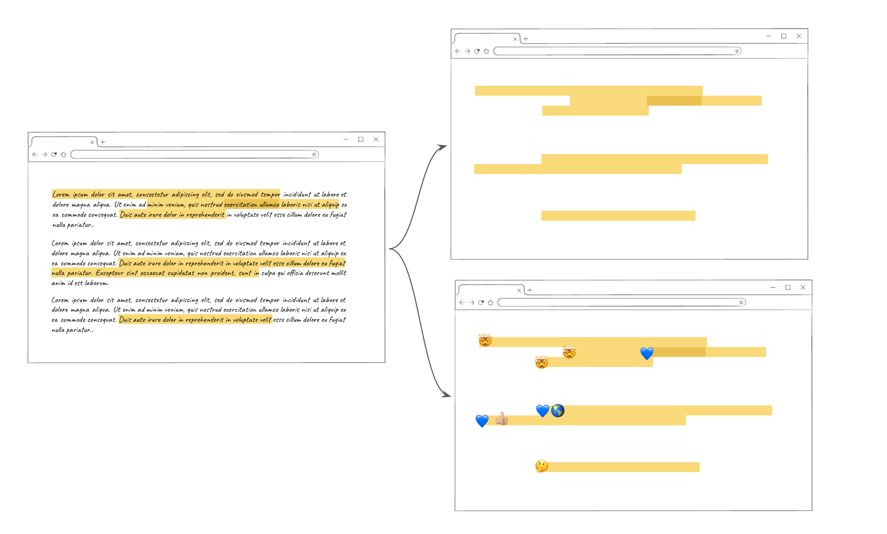
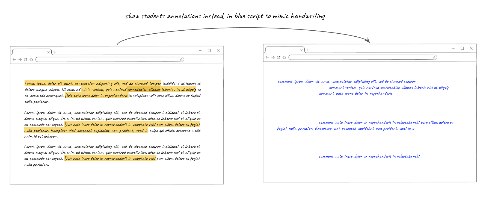
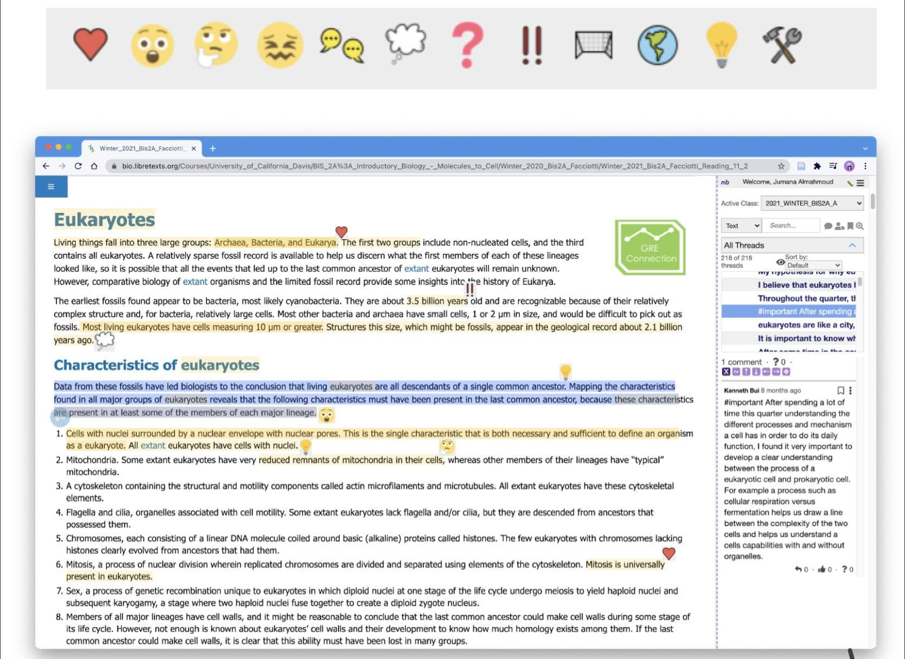

view the document as highlights without text and maybe show emoji on the side
view the document as the annotations from others instead of the actual text
view the document with a map of emojis on top to show interesting or confusing areas areas
